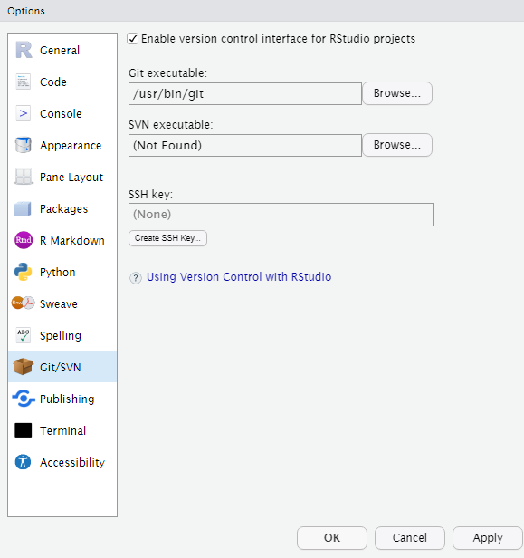
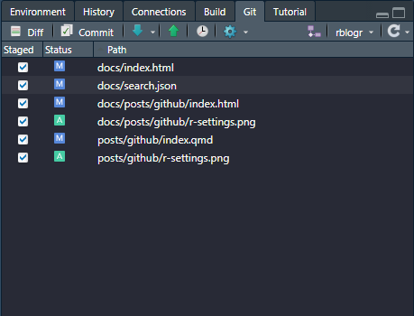
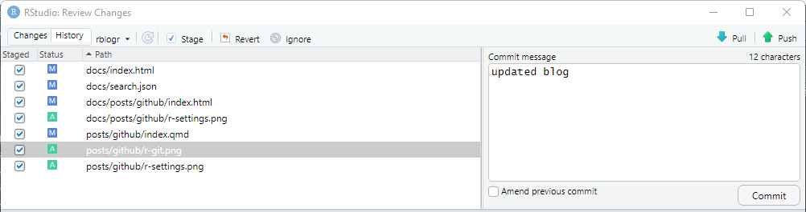
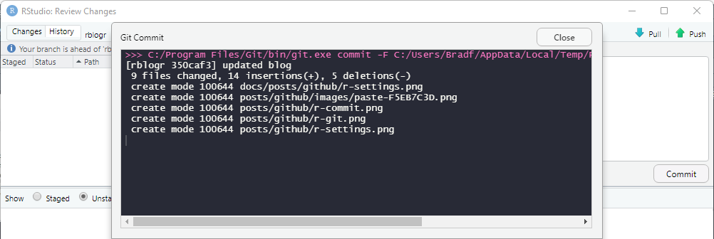

Using GitHub and RStudio Together
Organizing projects in RStudio using GitHub is one thing I wish I had known about much sooner…
At first when I was learning R, I would only create R Script files and then save each plot as a .png. As time went on I discovered R Notebooks and R Markdown, these where perfect for practicing my R and having a single file with multiple different R Chunks that I could set up for each analysis stage. It was perfect because the file when saved would save a .html version, so it was a great way to work on and share projects.
More recently my projects became bigger and so did the files, but my local folder on my desktop named “Data Science” became more filled. At the same time I was creating my first GitHub account so I uploaded some of these R projects into repositories. Once I would make changes locally I would then replace the respective file on GitHub. This is the extent I used GitHub to, as a “Google Drive” in a way.
However I was looking through RStudio’s settings and noticed the Git/SVN option: 
After clicking the RStudio link I quickly learned you can connect RStudio to GitHub. I watched a few videos and I was able to connect the two together. I did find that having the desktop GitHub app helped with the initial set up and cloning your repositories.
Now when making a project in R, I create a repository with it and can push / pull project changes live. I ended up creating a new GitHub account and starting fresh with this new organization. This is how I currently organize my GitHub:
Projects get their own repositories.
- Each one gets their own
ReadMefiles that describes the project.Smaller files like individual
R ScriptsorR Notebooksgo into myRrepository,.SQLfiles go into theSQLrepository and so on.
- Each main repository like
RorSQLgets aReadMefor describing my work in general and other details.
In addition to this, I keep a clone of each repository on my local machine as a backup, and as a way to edit and push/pull updates from GitHub.
Having a repository for each project is great as you can also have a GitHub Pages site for each of them to share your code, or even a deliverable. Using Quarto and GitHub Pages is such a smooth process to rapidly deploy reproducible deliverables for stakeholders. When setting up the Pages with GitHub it will automatically update the website with a push to the main branch, meaning I can update my website from RStudio.
Using Git in RStudio
In RStudio you can access the Git tab once you are connected, and page will add records as your make changes to the files. You can check them off and click the green arrow to push the changes to GitHub.

You can also hit the Commit button to then see the below example:

Steps to a Push
Check off all the changes on the left side.
Enter a commit message.
Press the commit button on the bottom right, a window like this should then pop up. 
Close out of the pop up window, then hit the green up arrow labeled “Push” and you have done a push.
Done
Steps to a Pull
- Hit the blue down arrow labeled “Pull”
- Done
Conclusion
To some this may seem like more to set up, and sure it may be a little more than just hitting save. The most important takeaway is that some type of file organization method needs to be implemented and sooner rather than later.
The benefits of using GitHub:
Having that central cloud based storage of files and projects.
Collaborating with others can be easier with this method as everyone would need to have an account and be authorized to contribute to the repository, opposed to emailing or sending files back and forth.
Branches for not losing your main files when making edits.
Access to GitHub Pages for projects (like this blog).
Build a portfolio.
Learn how Git and GitHub works!